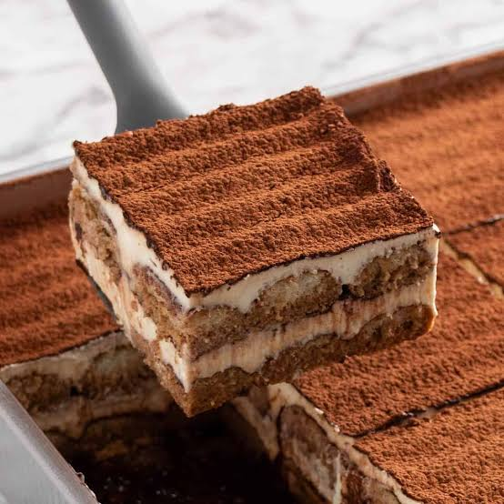

Tiramisu is a classic Italian dessert made with layers of
mascarpone cheese, cocoa, and coffee-soaked ladyfingers.
A personal favorite of mine, something to look forward to.
Add whipping cream to a mixing bowl and beat on medium speed with electric mixers
(or use a stand mixer). Slowly add sugar and vanilla and continue to beat until stiff peaks.
Add mascarpone cheese and fold in until combined. Set aside.
Add coffee and liqueur to a shallow bowl. Dip the lady fingers in the coffee
(Don't soak them–just quickly dip them on both sides to get them wet)
and lay them in a single layer on the bottom of an 8×8'' or similar size pan.
Smooth half of the mascarpone mixture over the top.
Add another layer of dipped lady fingers.
Smooth remaining mascarpone cream over the top.
Smooth half of the mascarpone mixture over the top.
Add another layer of dipped lady fingers.
Smooth remaining mascarpone cream over the top.
Calories: 297kcal, Carbohydrates: 26g, Protein: 5g, Fat: 18g, Saturated Fat: 11g,
Polyunsaturated Fat: 1g, Monounsaturated Fat: 2g, Cholesterol: 88mg, Sodium: 77mg,
Potassium: 124mg, Fiber: 1g, Sugar: 11g, Vitamin A: 618IU, Vitamin C: 1mg,
Calcium: 90mg, Iron: 1mg